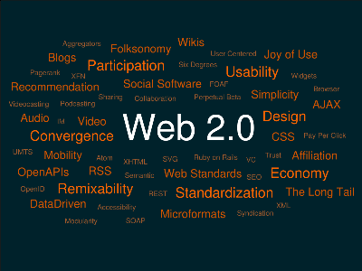

What’s Web 2.0?
Web 2.0 is a trend in World Wide Web technology, and web design, a second generation of web-based communities and hosted services such as social-networking sites, wikis, blogs, and folksonomies, which aim to facilitate creativity, information sharing, collaboration, and sharing among users. It is almost defined as the new era of the World Wide Web. The term became notable after the first O’Reilly Media Web 2.0 conference in 2004. Although the term suggests a new version of the World Wide Web, it does not refer to an update to any technical specifications, but to changes in the ways software developers and end-users use webs. According to Tim O’Reilly:
Web 2.0 is the business revolution in the computer industry caused by the move to the Internet as platform, and an attempt to understand the rules for success on that new platform.
Some technology experts, notably Tim Berners-Lee, have questioned whether one can use the term in a meaningful way, since many of the technology components of "Web 2.0" have existed since the early days of the Web.
